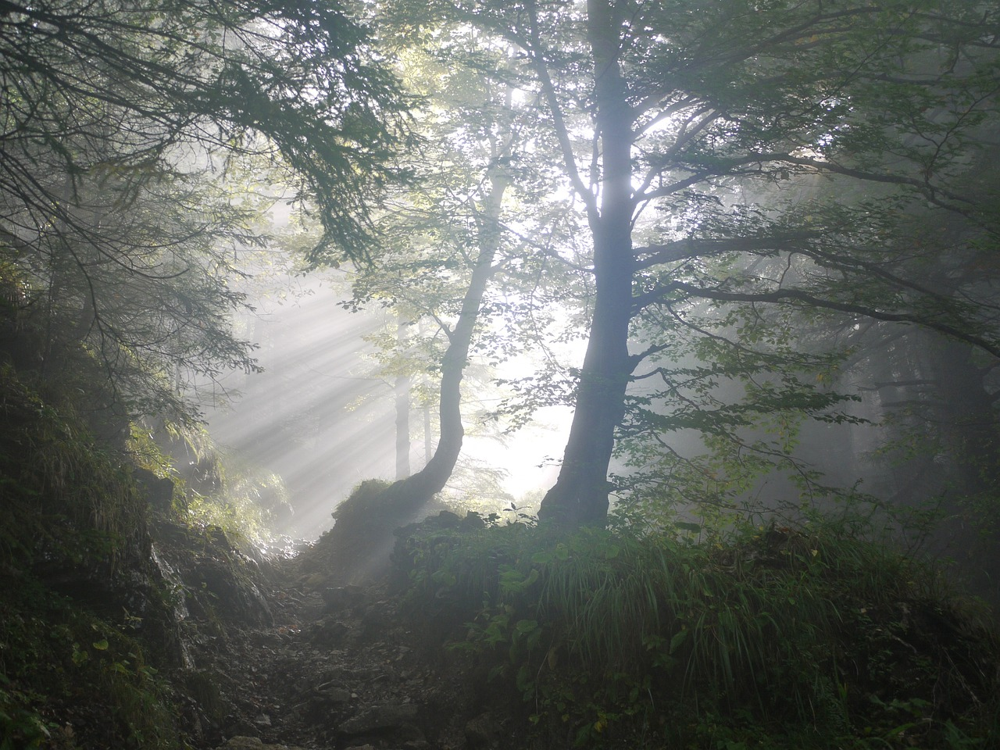

Longed Peace
 Photo by MonikaP on PixabayRaced through jungles under pouring rain, The wind howled, carried away my breath, Leaves brushed my skin with every step, Footsteps imprint where the earth has wept.
Sunlight pierces through the canopy, A hope to keep on moving, Keep on running, And searching endlessly.
There it is, the garden of dreams, A portal I envisioned, night and day, A figment, an escape from reality, A sanctuary from life's grey.
Softly blurred, like a vision half-seen, A peculiar scent, yet deeply yearned, The breeze blends nostalgia and fantasy, Each breath, a lullaby of hopes and clarity.
Years I have chased the whispers of its grace, Only to find it lies in a timeless space, Beyond the reach of earthly sight, Where shadows fade in the daylight.